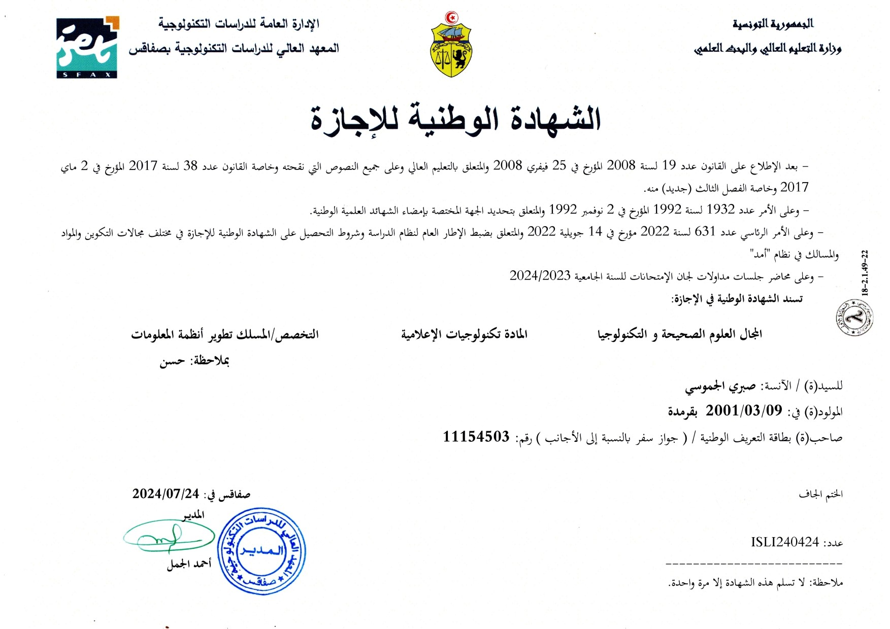

Parcours Académique
Education
Diplôme nationale Baccalauréat(Technique)
2017 - 2021
Lycée Abou Kacem Chebbi ,Sfax Teniour .
Le baccalauréat en Tunisie est un diplôme national indispensable à l'entrée dans une formation de l'enseignement supérieur.
Diplôme en licence des technologies d’informatique
2021 - 2024
L'Institut Supérieur des Etudes Technologiques de Sfax
Diplôme en licence des technologies d’informatique spécialité développement des systèmes d’information
